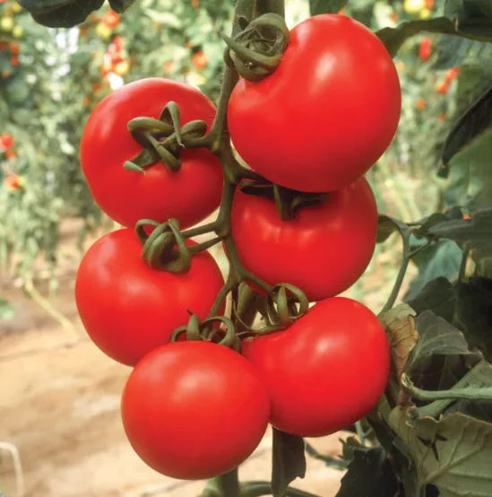

AI agronomist for tomato growers
The field is changing faster than ever. Time to catch up.
Harvest is comingCatchUp launches in
—
Days
—
Hrs
—
Min
—
Sec
Launching on iOS, Android & web in 2026.
The season is getting harder. Your tools should get smarter.
A shifting climate
Heat spikes and erratic rain throw proven calendars out of step. CatchUp adapts the plan to the weather you're actually getting.
Disease on the move
Blight, viruses and pests are reaching new regions. Spot the early signs and act before a problem spreads down the row.
Faster decisions
Irrigate or hold? Spray or wait? Get a grounded recommendation in seconds — not after the next agronomist visit.
How it works
Your field, plus a century of tomato know-how.
1
Bring your field in
Scouting notes, photos, sensors, weather and soil — CatchUp works with the data you already gather.
2
Just ask
“Why are these leaves curling?” “Safe to spray before the rain?” Answers grounded in real agronomy.
3
Act with confidence
A clear recommendation, the reasoning behind it, and what to watch — tuned to your variety and region.
Stop chasing the season. Catch up to it.
Join the growers getting first access when CatchUp opens in 2026.
Opening in 2026.